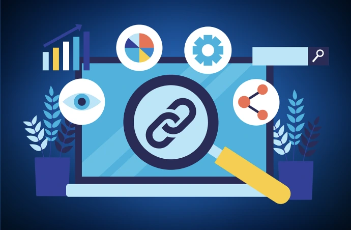
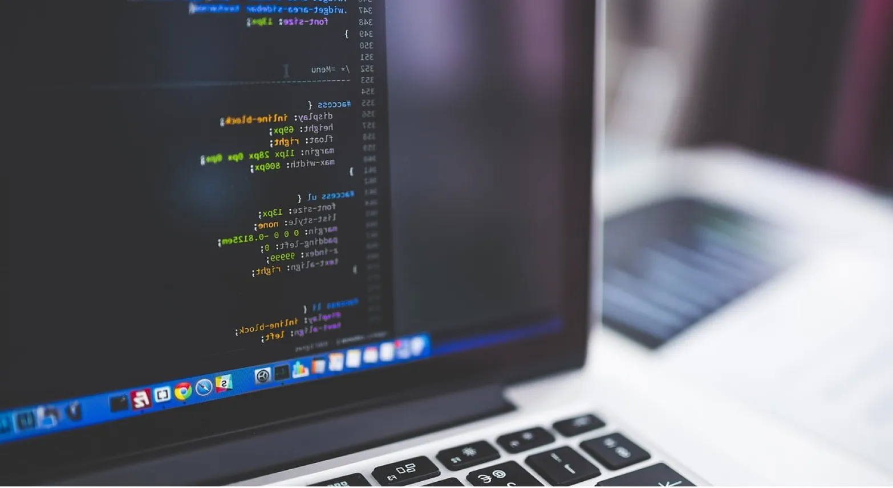
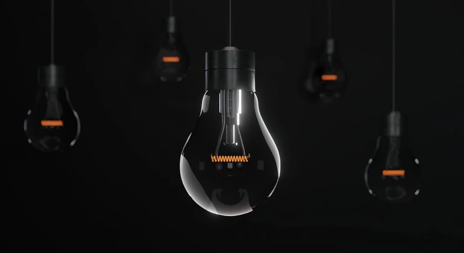

Research
Jeg har lært at indsamle og anvende brugerindsigter gennem research og tests, så designbeslutninger baseres på reelle behov frem for antagelser.


Jeg har lært at indsamle og anvende brugerindsigter gennem research og tests, så designbeslutninger baseres på reelle behov frem for antagelser.

Jeg har lært at udvikle idéer gennem skitser, wireframes og prototyper, så løsninger kan testes, evalueres og forbedres gennem designprocessen.
Jeg har arbejdet med opbygning af responsive websites i HTML og CSS samt fået en grundlæggende forståelse for JavaScript, interaktion og digital funktionalitet.